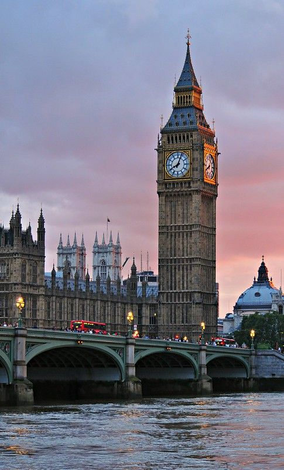
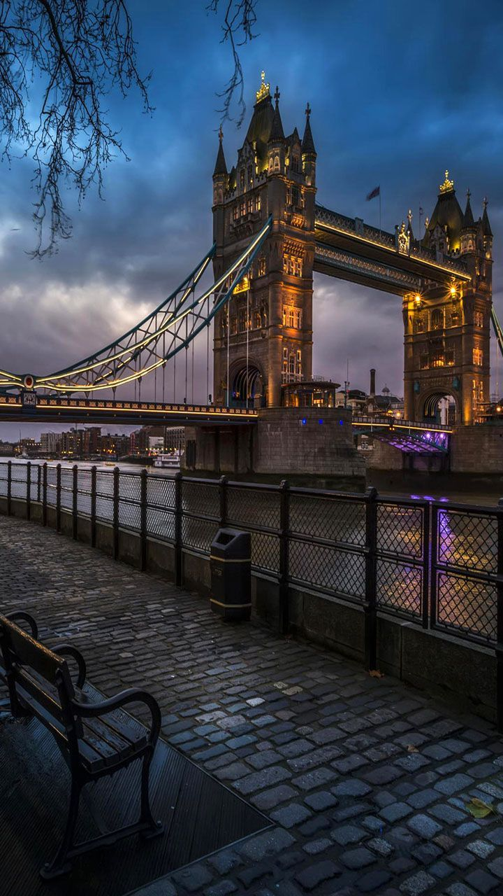
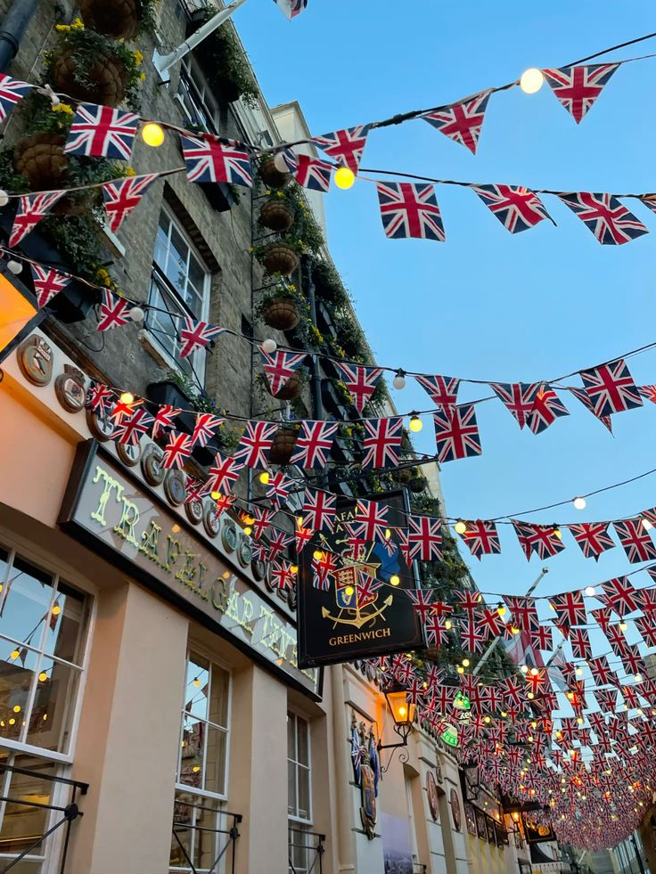

LONDON
A vibrant, multicultural city with a rich history, iconic landmarks, and a thriving arts and entertainment scene



About London
London is a captivating paradox where centuries of royal tradition seamlessly collide with the pulse of high-tech modernity. It is a city where you can admire the Gothic grandeur of Westminster Abbey in the morning and lose yourself in the neon lit, cutting edge architecture of the City by afternoon. Beyond the iconic landmarks, London’s true soul lies in its diverse neighborhoods the gritty, rebellious spirit of Camden’s markets, the pastel colored charm and cinematic elegance of Notting Hill, and the street-art-drenched, trendsetting energy of Shoreditch. Each corner brings a completely different vibe, while the vast greenery of Hyde Park and the scenic riverside walks along the South Bank offer much-needed space to breathe amidst the urban hustle. With its world class theater scene in the West End, a global culinary landscape that tastes like every corner of the earth, and museums that house the world’s history, the city offers endless discoveries in every season.
Why I'm Drawn to London
The reason I am so drawn to London is my fascination with how a city can honor its deep historical roots while remaining at the absolute forefront of global culture and innovation. I want to go there to walk the same streets as the literary and historical figures I’ve only ever read about, feeling the weight of the past at the Tower of London before stepping into the future at the Tate Modern. I am inspired by London’s "melting pot" nature I want to experience that unique British blend of politeness and punk rock, tradition and transformation.
Why I Want to Visit London
I want to visit because London isn't just a city it’s a world in itself. Whether it’s finding a hidden centuries old pub tucked away in an alleyway, browsing through a dusty bookstore in Charing Cross, or witnessing the sheer scale of the British Museum, I want to immerse myself in a place that feels both familiar from the movies and entirely unpredictable in person. For me, London represents the ultimate adventure for anyone who loves history, art, and the vibrant, fast-paced rhythm of a truly global capital.